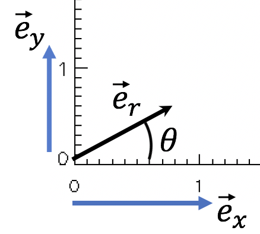

Forrige side🙂 🙁Forberede 2-legemeproblem: vektorregningFORUM
Første steg kan være å uttrykke e⃗r med faste enhetsvektorer som e⃗x og e⃗y. La oss bruke denne figuren: 
Hvis vi nå skal skrive e⃗r = ae⃗x + be⃗y Hva er a og b? Tenk deg litt om, før du ... ... trykker her for noen alternativer
a = θ b = 0 a = sin θ b = 0 a = cos θ b = 0 a = sin θ b = cos θ a = cos θ b = sin θ a = 1 b = sin θ